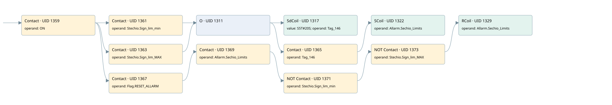

stoichiometry out of range
burner control · 검색 색인 순서 21 · 원본 내부 NID 추정 20
백업 PLF 원본의 2704861 바이트 위치에서 복원한 XML. 검색 문서 1874의 객체 키 16102200f310000000000000와 연결했다. 이름 해석 12/12개. 남은 RefId는 상수 또는 미해석 참조다.
연결 구조 다시 그리기
원본 Part/PCon/Wire를 이용한 연결도다. TIA 화면의 래더 배치 또는 실행 결과를 재현한 그림은 아니다. 핀 연결은 아래 표와 원본 XML을 기준으로 읽는다. 노드 위에 마우스를 두면 피연산자 이름을 볼 수 있다.

접점·코일·블록과 피연산자
| Part UID | Gate | Negated 핀 | 연결 피연산자 |
|---|---|---|---|
| 1359 | Contact | operand = ON | |
| 1361 | Contact | operand = Stechio.Sign_lim_min | |
| 1363 | Contact | operand = Stechio.Sign_lim_MAX | |
| 1311 | O | ||
| 1317 | SdCoil | value = S5T#20S; operand = Tag_146 | |
| 1365 | Contact | operand = Tag_146 | |
| 1322 | SCoil | operand = Allarm.Sechio_Limits | |
| 1367 | Contact | operand = Flag.RESET_ALLARM | |
| 1369 | Contact | operand = Allarm.Sechio_Limits | |
| 1371 | Contact | operand | operand = Stechio.Sign_lim_min |
| 1373 | Contact | operand | operand = Stechio.Sign_lim_MAX |
| 1329 | RCoil | operand = Allarm.Sechio_Limits |
접점 경로를 펼친 조건식
Contact·O/A·비교기의 원본 연결을 읽기 쉽게 펼친 보조 해석이다. POWER는 전원 레일 시작을 뜻한다. 호출 블록·에지·타이머의 내부 동작과 다중 쓰기 순서는 이 표로 실행 검증하지 않았다. 미해석 핀과 RefId는 원문 연결표에서 확인한다.
| UID | 동작 | 대상 | 원본 접점 경로 | 내용 |
|---|---|---|---|---|
| 1317 | SdCoil | Tag_146 | ((ON AND Stechio.Sign_lim_min) OR (ON AND Stechio.Sign_lim_MAX)) | 시간 동작 SdCoil; 타이머 의미 추가 확인 / 시간 인자 S5T#20S |
| 1322 | SCoil | Allarm.Sechio_Limits | (((ON AND Stechio.Sign_lim_min) OR (ON AND Stechio.Sign_lim_MAX)) AND Tag_146) | 조건 성립 시 Set |
| 1329 | RCoil | Allarm.Sechio_Limits | ((((ON AND Flag.RESET_ALLARM) AND Allarm.Sechio_Limits) AND NOT [Stechio.Sign_lim_min]) AND NOT [Stechio.Sign_lim_MAX]) | 조건 성립 시 Reset |
원본 배선 연결
| Wire UID | 동일 Wire 연결 끝점 |
|---|---|
| 1375 | Powerrail {} ↔ Part 1359.in |
| 1342 | ORef 1330 (ON) ↔ Part 1359.operand |
| 1360 | Part 1359.out ↔ Part 1361.in ↔ Part 1363.in ↔ Part 1367.in |
| 1343 | ORef 1331 (Stechio.Sign_lim_min) ↔ Part 1361.operand |
| 1362 | Part 1361.out ↔ Part 1311.in1 |
| 1344 | ORef 1332 (Stechio.Sign_lim_MAX) ↔ Part 1363.operand |
| 1364 | Part 1363.out ↔ Part 1311.in2 |
| 1345 | Part 1311.out ↔ Part 1317.in ↔ Part 1365.in |
| 1346 | ORef 1333 (S5T#20S) ↔ Part 1317.value |
| 1347 | ORef 1334 (Tag_146) ↔ Part 1317.operand |
| 1348 | ORef 1335 (Tag_146) ↔ Part 1365.operand |
| 1366 | Part 1365.out ↔ Part 1322.in |
| 1350 | ORef 1336 (Allarm.Sechio_Limits) ↔ Part 1322.operand |
| 1352 | ORef 1337 (Flag.RESET_ALLARM) ↔ Part 1367.operand |
| 1368 | Part 1367.out ↔ Part 1369.in |
| 1353 | ORef 1338 (Allarm.Sechio_Limits) ↔ Part 1369.operand |
| 1370 | Part 1369.out ↔ Part 1371.in |
| 1354 | ORef 1339 (Stechio.Sign_lim_min) ↔ Part 1371.operand |
| 1372 | Part 1371.out ↔ Part 1373.in |
| 1355 | ORef 1340 (Stechio.Sign_lim_MAX) ↔ Part 1373.operand |
| 1374 | Part 1373.out ↔ Part 1329.in |
| 1357 | ORef 1341 (Allarm.Sechio_Limits) ↔ Part 1329.operand |
식별자 해석 근거 12개
| ORef UID | RefId | 이름 | IdentXmlPart 파일 | 해석 방법 |
|---|---|---|---|---|
| 1330 | 1 | ON | 0582-IdentXmlPart.xml | UID/RID + search-text + NID agreement |
| 1331 | 160 | Stechio.Sign_lim_min | 0585-IdentXmlPart.xml | UID/RID + search-text + NID agreement |
| 1332 | 161 | Stechio.Sign_lim_MAX | 0585-IdentXmlPart.xml | UID/RID + search-text + NID agreement |
| 1334 | 163 | Tag_146 | 0582-IdentXmlPart.xml | UID/RID + search-text + NID agreement |
| 1333 | 162 | S5T#20S | 0586-IdentXmlPart.xml | literal candidate: UID/RID/NID + nearby named declarations + search-text agreement |
| 1335 | 163 | Tag_146 | 0582-IdentXmlPart.xml | UID/RID + search-text + NID agreement |
| 1336 | 164 | Allarm.Sechio_Limits | 0585-IdentXmlPart.xml | UID/RID + search-text + NID agreement |
| 1337 | 8 | Flag.RESET_ALLARM | 0585-IdentXmlPart.xml | UID/RID + search-text + NID agreement |
| 1338 | 164 | Allarm.Sechio_Limits | 0585-IdentXmlPart.xml | UID/RID + search-text + NID agreement |
| 1339 | 160 | Stechio.Sign_lim_min | 0585-IdentXmlPart.xml | UID/RID + search-text + NID agreement |
| 1340 | 161 | Stechio.Sign_lim_MAX | 0585-IdentXmlPart.xml | UID/RID + search-text + NID agreement |
| 1341 | 164 | Allarm.Sechio_Limits | 0585-IdentXmlPart.xml | UID/RID + search-text + NID agreement |
검색 코드 보조 자료
참조 명칭을 찾기 위한 자료이며 실행 순서나 AND/OR 관계는 위 연결표로 확인한다.
"on" "stechio".sign_lim_min "tag_146" s5t#20s "stechio".sign_lim_max "flag".reset_allarm "allarm".sechio_limits "stechio".sign_lim_min "stechio".sign_lim_max "allarm".sechio_limits "tag_146" "allarm".sechio_limits